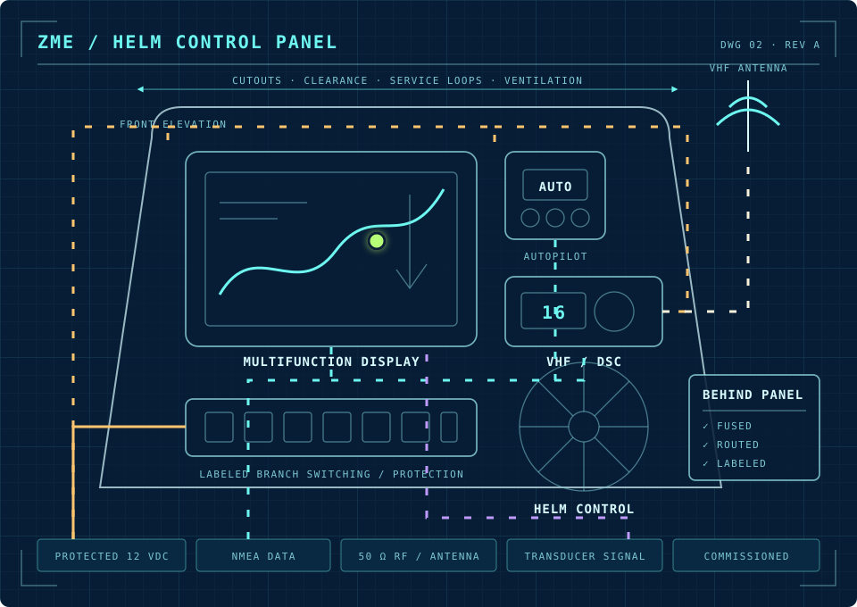

System planning
Equipment fit, sightlines, cutouts, service access, electrical load, data compatibility and cable paths resolved before the dash is opened.
Specialty 02 / Marine electronics
A good installation is planned around the boat, protected electrically, routed for service and commissioned as a complete system—not merely screwed into the dash.

Installation scope
Equipment fit, sightlines, cutouts, service access, electrical load, data compatibility and cable paths resolved before the dash is opened.
Displays, sensors, transducers, radios, AIS, gateways and connectivity equipment installed with protected branches and deliberate routing.
Software, sources, instances, sensor inputs, network communication and control functions checked before handoff.
What proper installation includes
Installation sequence
Confirm equipment, space, power, compatibility and the full cable path.
Lay out the helm, protection, network and service access before drilling.
Install cleanly with marine-grade practices and disciplined routing.
Configure, test and explain the completed system.
Installation help · Upper Florida Keys
Text the boat location, equipment you have or want, and clear photos of the helm, panel and access behind it.